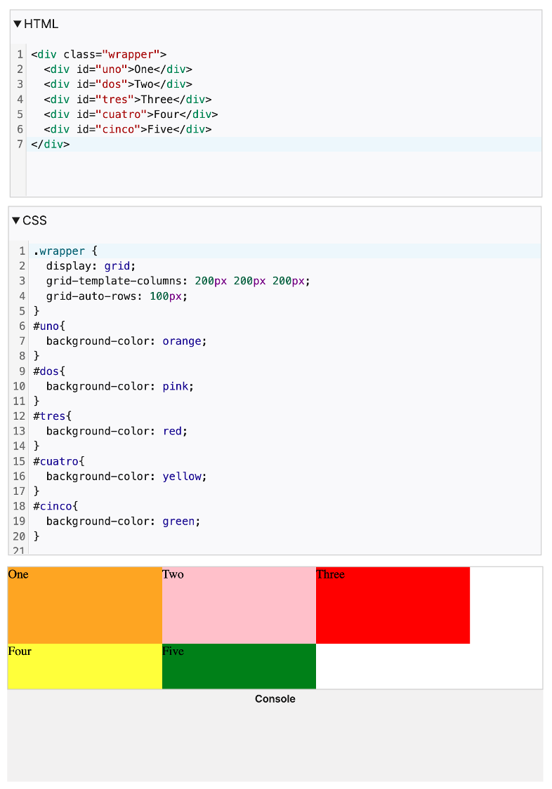

S03T01: Display Flex vs Grid
Elaborado por: Valentina Méndez
display:grid
Al declarar la propiedad display como grid o inline-grid, creamos un contenedor de cuadrícula, esto significa que los elementos dentro del contenedor se acomodaran como un conjunto de líneas horizontales y verticales que se intersectan - un grupo define columnas y el otro filas. Los elementos se pueden colocar en la cuadrícula respetando estas columnas y filas.
Características
El diseño de cuadrícula(grid) CSS tiene las siguientes características:
- Tamaños fijos y flexibles: se pueden crear cuadrículas con tamaños fijos, utilizando píxeles. También se pueden crear cuadrículas utilizando tamaños flexibles con porcentajes o con la nueva unidad de medida fr (fracción), diseñada para este propósito.
- Posicionamiento de elementos: colocar elementos en una ubicación precisa en la cuadrícula utilizando números de línea, nombres o seleccionando un área de la cuadrícula. Grid también contiene un algoritmo para controlar la ubicación de elementos que no tienen una posición explícita en la cuadrícula.
- Creación de líneas adicionales para alojar contenido: con grid se pueden definir cuántas filas y columnas se requieran, sin embargo, si se agregas más elementos de los que caben en la cuadrícula, grid creará automáticamente nuevas filas o columnas para acomodarlos.
- Control de alineación:controlar la forma cómo se alinean los elementos una vez colocados en un área de cuadrícula y cómo está alineada toda la cuadrícula.
- Control de contenido superpuesto:colocar varios elementos en la misma celda de la cuadrícula, lo que significa que pueden superponerse (solaparse) unos sobre otros.Para controlar cuál elemento está por encima o por debajo, se utiliza la propiedad z-index.
Filas y columnas del grid
Se definen filas y columnas en la cuadrícula con las propiedades grid-template-columns y grid-template-rows.
Ejemplo de uso
